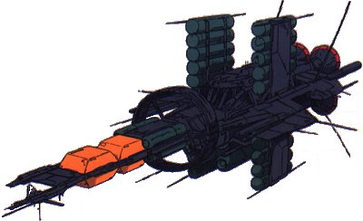

| Jupitoris |
|
|  | |
General and Technical Data |
|
|
Unit Type: Colonization and interplanetary trade ship Operator: Jupiter Development Enterprise Group Propulsion system: 4x nuclear pulse engine; Solar sail Hangar capacity: 100 cargo, 6x infantry, 45x mobile suits, 1x shuttle or mobile armor Launch catapults: 0 Fixed armaments: 24x AA machinegun turret. Technical and Historical Notes The Jupitoris was designed with the express purpose of colonizing other planets and mass trade of helium 3. Two kilometers long, the massive ship dwarfs any other warship in existance, smaller ships nearly able to hide inside its girth. The Jupitoris's massive aft section contains two 'wings' filled with fuel and cargo containers, as well as a central cargo bay capable of housing more mobile suits than a Gwazine class battleship. It is so large it cannot dock inside of a space colony, but has a large enough cargo hold to dock conventional space shuttles, facilitating transport between a Jupitoris and a colony or space station. The mid section is a spinning gravity deck, housing the crew quarters and recreation areas, and the front contains the bridge as well as the mechanisms for the solar sail. Unlike any other trading vessel, the Jupitoris is armed with a bristling array of antiaicraft machineguns, designed to assist the monstrous craft in travel through the sometimes dangerous asteroid belt. These weapons were not designed to destroy mobile suits, but work just as well in that capacity. The JDEG maintains and produces Jupitoris class vessels, having close to a dozen of them in service currently. The extreme size and compliment of these ships, as well as the Antarctic Treaty have prevented both Zeon and the Earth Federation from attempting to stop the helium 3 trade. |